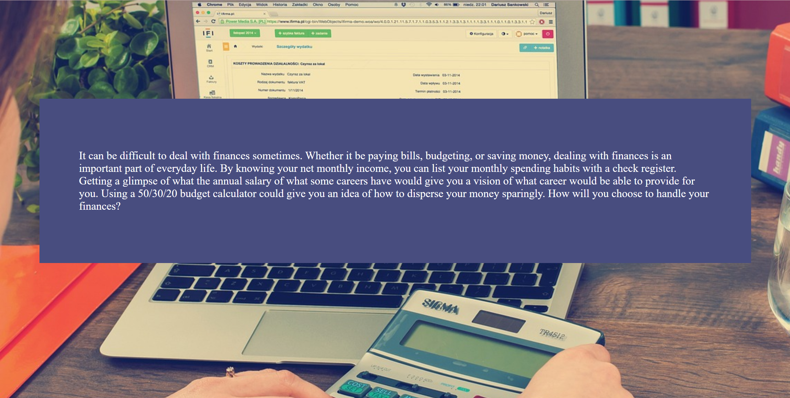
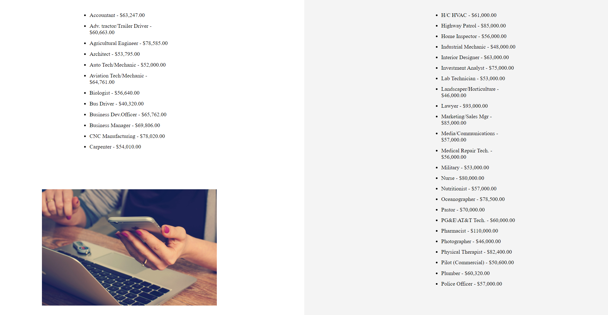

Budget Calculator Project
For the Budget Calculator Project, we were required to create a website for EECU based on their handbook. Instead of coding everything ourselves, we were tasked with acting as a project leader or a developer. As a project leader, we were not allowed to work on our own project. Instead, we had to guide the developers on what to do, and how it should look.
 